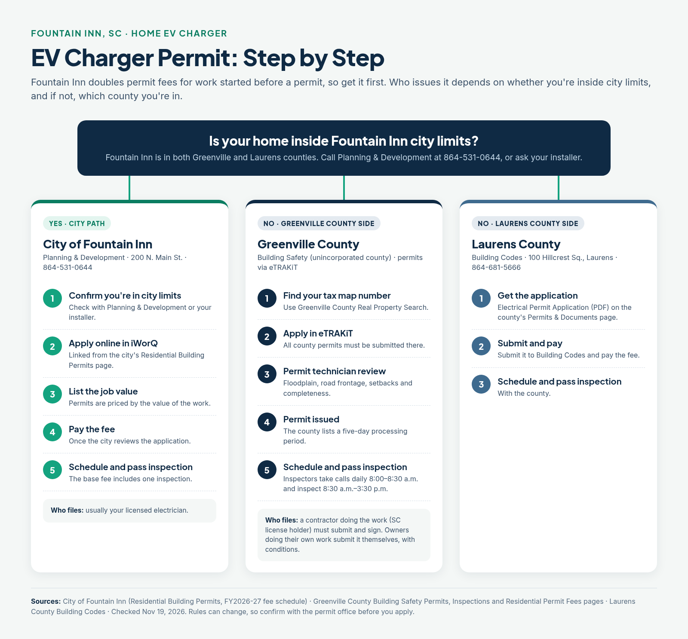
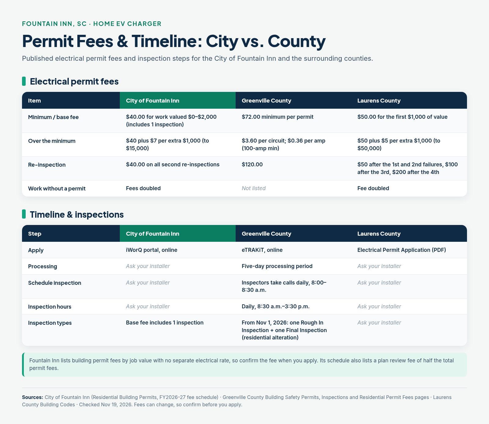

Fountain Inn EV Charger Permit Guide
Last Updated On: November 19, 2026
Installing a Level 2 charger at a Fountain Inn home means adding electrical wiring, and that needs a permit and an inspection. Fountain Inn takes a little more checking than most towns: the city reaches into both Greenville and Laurens counties, and a Fountain Inn mailing address doesn't mean you're inside city limits. This guide covers who issues the permit, how to apply, what it costs, how inspections work, and how the permit ties into Duke Energy's Charger Prep Credit.
For the city vs county basics, see our permits overview: city vs county. The Greenville EV charger permit guide covers the Greenville County process in the same format.
Do you need a permit for a home EV charger in Fountain Inn?
Yes, in almost every case. Fountain Inn's fee schedule doubles permit fees "for any work that is started prior to obtaining a permit" (City of Fountain Inn FY2026-27 fee schedule (PDF)), so get the permit first. Outside city limits, Greenville County lists "all electrical" work as needing a permit (Greenville County Building Safety: Permits), and Laurens County posts its own Electrical Permit Application (PDF).
City of Fountain Inn or the county: who issues your permit?
It depends on whether the property is inside Fountain Inn city limits, and if not, which county it's in.
- Inside Fountain Inn city limits (either county): City of Fountain Inn Planning & Development issues the permit.
- Outside city limits, Greenville County side: Greenville County Building Safety issues it.
- Outside city limits, Laurens County side: Laurens County Building Codes issues it.
How to check if you're inside Fountain Inn city limits
- Call Planning & Development at 864-531-0644 with your address.
- On the Greenville County side, look up your tax map number on Greenville County Real Property Search. You'll need it for a county permit anyway.
- Your installer can usually tell you too, since they pull permits in both counties.
How to apply for an EV charger permit in the City of Fountain Inn

- Confirm you're in city limits with Planning & Development or your installer.
- Apply online through iWorQ. Fountain Inn's Residential Building Permits page sends applications to the city's iWorQ permit portal. The city's Residential Plan Review Requirements (PDF) also point to the iWorQ portal for the building permit application.
- List the job value. Fountain Inn prices permits by the value of the work (see fees below).
- Pay the fee once the city reviews the application.
- Schedule and pass inspection. The base fee includes one inspection.
Who files it? Usually your licensed electrician.
Contact: City of Fountain Inn Planning & Development, 200 North Main Street, Fountain Inn, SC 29644. Phone 864-531-0644 (City of Fountain Inn: Permitting).
How to apply outside Fountain Inn city limits
Greenville County side
- Find your tax map number. The county says every permit application needs either a tax map number or an active permit number for the site (Greenville County Permits). Look it up on Greenville County Real Property Search.
- Apply through eTRAKiT. The county says all permits must be submitted through eTRAKiT. Setup steps are in the county's eTRAKiT user manual.
- Wait for review. A permit technician checks the application for floodplain, road frontage, setbacks and completeness.
- Get the permit issued. The county currently lists a five-day processing period.
- Schedule and pass inspection. County inspectors take calls daily from 8:00 to 8:30 a.m. and inspect from 8:30 a.m. to 3:30 p.m. (Greenville County Inspections).
Who files it? If a contractor does the work, the contractor (an SC license holder) must submit and sign the application. If you do the work yourself as the owner, you submit it, and owner-builder permits come with conditions listed on the county's page.
Laurens County side
- Get the application. Laurens County Building Codes posts an Electrical Permit Application (PDF) on its Permits & Documents page.
- Submit it to Building Codes and pay the fee (see fees below).
- Schedule and pass inspection with the county.
Contact: Laurens County Building Codes, 100 Hillcrest Square, Laurens, SC 29360. Phone 864-681-5666 (Laurens County Building Codes).
Fountain Inn EV charger permit fees
These are the published permit fees. Your exact fee depends on what's on the permit, so your installer will have the final number.
| Item | City of Fountain Inn | Greenville County (unincorporated) | Laurens County (unincorporated) |
|---|---|---|---|
| Minimum / base fee | $40.00 for work valued $0 to $2,000 (includes 1 inspection) | $72.00 minimum per permit | $50.00 for the first $1,000 of value |
| Over the minimum | $40 plus $7 per extra $1,000 (to $15,000) | $3.60 per circuit; $0.36 per amp (100-amp min) | $50 plus $5 per extra $1,000 (to $50,000) |
| Re-inspection | $40.00 on all second re-inspections | $120.00 | $50 after the 1st and 2nd failures, $100 after the 3rd, $200 after the 4th |
| Work without a permit | Fees doubled | Not listed | Fee doubled |
| Source | City FY2026-27 fee schedule (PDF) | County residential permit fees (PDF) | Laurens County fee schedule |
Fountain Inn's schedule lists building permit fees by job value and doesn't show a separate electrical rate, so confirm the fee when you apply. The schedule also lists a plan review fee of half the total permit fees. For a single charger circuit, the job value usually lands in the lowest tier.
How long it takes, and how inspections work

| Step | City of Fountain Inn | Greenville County (unincorporated) | Laurens County (unincorporated) |
|---|---|---|---|
| Apply | iWorQ portal, online | eTRAKiT, online | Electrical Permit Application (PDF) |
| Processing time | Not published | Five-day processing period (county notice) | Not published |
| Schedule inspection | Not published | Inspectors take calls daily 8:00 to 8:30 a.m. | Not published |
| Inspection hours | Not published | Daily, 8:30 a.m. to 3:30 p.m. | Not published |
| Inspection types | Base fee includes 1 inspection | From Nov 1, 2026, residential alteration permits use one "Rough In Inspection" and one "Final Inspection" | Not published |
Sources: City of Fountain Inn: Residential Building Permits, City FY2026-27 fee schedule (PDF), Greenville County Permits, Greenville County Inspections, Laurens County Building Codes.
If your project includes a panel upgrade, plan for more time, since your utility has to schedule the disconnect and reconnect.
Which power company serves you, and does Duke's Charger Prep Credit apply?
Duke Energy Carolinas serves the Upstate, including Greenville County (Duke Energy news release). Laurens Electric Cooperative serves Laurens County and parts of Greenville County, so many homes around Fountain Inn get power from the co-op. The name on your power bill tells you which one you have. See which utility serves you.
Duke Energy's Charger Prep Credit
If Duke is your utility, its Charger Prep Credit pays back part of the cost of getting your home ready for a Level 2 charger. It's a Duke program, so Laurens Electric members and other co-op members don't qualify. Per Duke's page:
| Cost | Counts toward the credit? |
|---|---|
| Conduit, wiring and outlets supplying the charger | Yes |
| Panel upgrades and breaker installation | Yes |
| EV charger hardware | No |
| Hardware mounting and commissioning | No |
| Pulling permits and fees | No |
There are two ways to get it:
- Customer Credit Option: you pick your electrician, then submit the paid invoice to Duke and get a check. Duke says this covers prep work done in the last four months (Customer Credit Option).
- Contractor Credit Option: Duke helps you choose an electrical contractor, and the credit shows up as a discount on the contractor's final bill (Contractor Credit Option).
Your permit matters here. Duke's latest program report to the SC Public Service Commission says applications are marked invalid without a detailed invoice with separate labor and materials lines, a copy of the approved permit from the local permitting authority, a summary of any grant funding, and proof of EV registration. It also says the service address has to match the address on the EV registration (Duke semi-annual update to the SC PSC, Sept. 2026). Keep a copy of your approved permit.
Duke's page doesn't publish the dollar amount. Ask Duke or your installer for the current credit before you count on it. Read more in our Duke Charger Prep Credit guide.
FAQ
Do I pull the permit or does my electrician?
Usually your electrician. In Greenville County, a contractor doing the work must submit and sign the application.
How do I know if my Fountain Inn address is in the city?
Call Planning & Development at 864-531-0644, or ask your installer. Outside city limits, Greenville County Building Safety or Laurens County Building Codes handles the permit, depending on your county.
How much is an EV charger permit in Fountain Inn?
Inside the city, it's $40.00 for jobs valued up to $2,000, which includes one inspection, then $7 per extra $1,000. Fees double if work starts before the permit.
How much is it in Laurens County?
Laurens County charges $50.00 for the first $1,000 of value, plus $5 per extra $1,000 up to $50,000.
How long does a permit take?
Fountain Inn and Laurens County don't publish processing times. Greenville County lists a five-day processing period.
I'm a Laurens Electric member. Can I get Duke's credit?
No. The Charger Prep Credit is a Duke Energy program. Call Laurens Electric and ask about its EV programs.
Does Duke's credit pay for the permit?
No. Duke's page says pulling permits and permit fees don't count toward the Charger Prep Credit. You still need the approved permit to apply.
Find a licensed installer in Fountain Inn
Your installer will handle the permit, the inspection and, if you're with Duke, the paperwork for the credit. See the ranked list of EV charger installers serving Fountain Inn, or check what a typical job runs in our installation cost guide.